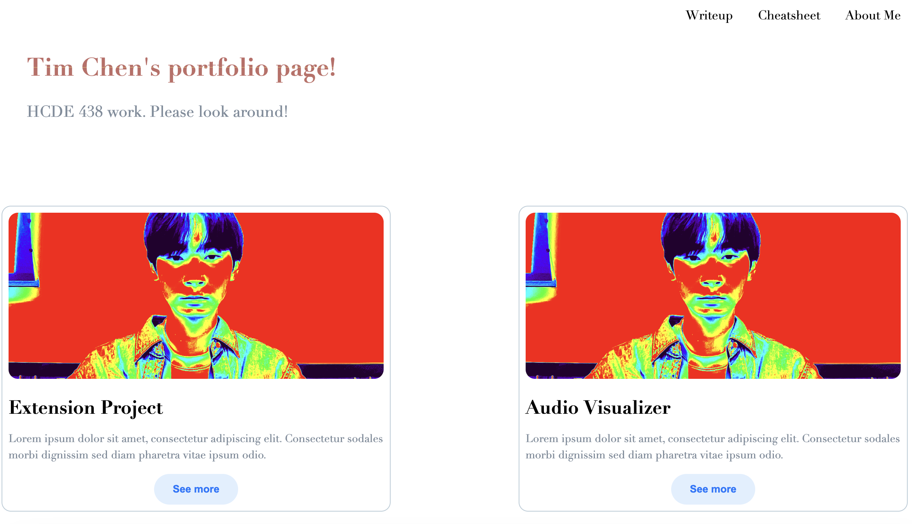
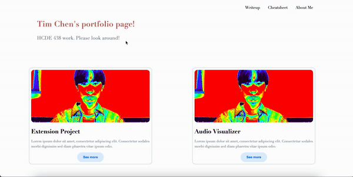

My process started with creating my homepage for my website where I just setup the basic title and some body text underneath. I also created the header in the top right for page navigation so that user's could more easily navigate across the different pages setup. From this point I went to create the about-me section which was relatively simple since I only needed to add an image and some content that I had in my current portfolio website.
After this point I went back to the homepage and added the CSS transitions on my title which included a jiggle and color change over a hover. This part took me a good amount of time because I wasn't familiar with either so I needed to google how to do it and test it out. The next part took me the longest time which was setting up the two cards I have on the homepage right now. I had to google as well how to incorporate and build a card into the homepage and it took me a lot of trial and error to create the cards I have on the homepage. There is an image below of what the homepage looks like however it is unfinished due to the fact that I don't have any of the course projects in the cards they are just filler cards at the moment.
After I finished with the homepage I went to create the cheatsheet page which was also relatively simple due to it just being my code I used for my transitions. I then finished the assignment by doing the writeup which also was just text and wasn't too complex.
An issue I had was creating the cards on the homepage of my portfolio website. This was a problem for me because I couldn't get the cards to look and be formatted how I expected or wanted them to look like. As a result I had to do a lot of googling to see how other people set it up and to then use those html codes as inspriation to create the cards that I was able to put onto my website. I also had to look at some css styling for the cards such as how to make it so that there is an effect once someone hovers over it to allow for better user experience on the site.
I chose to implement multiple CSS transitions on a hover action. One of my transitions was a jiggle on my header on my home page which is "Tim Chen's portfolio page". The other transition is to change the color of the text to a gradient with blue and red. The reason I chose to use these transitions was because I wanted to header to have the transition since it was the first thing that people would see on the website and I wanted to make the interaction engaging and fun. I made it work through looking at how to implement a jiggle transition in CSS as well as the same for the gradient. I changed the colors in the gradient to align more with what I wanted.
Additional ideas and features I might like to add to my site in the future: